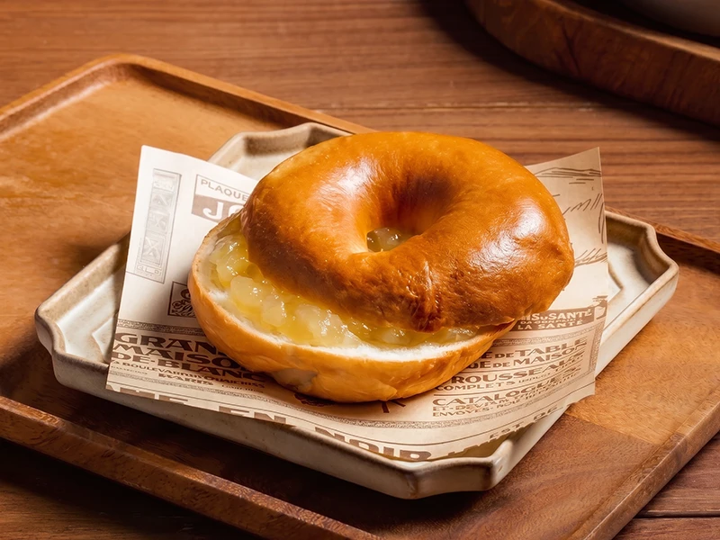
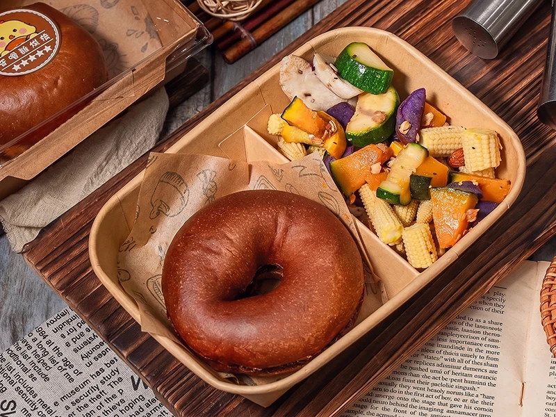

手工烘焙・每日現做
以溫度與時間慢慢等待，每一份貝果、蛋糕與沙拉，都是清晨手作的心意。
手作貝果
以誠實的手感與風土食材，烘焙出日常餐桌上最踏實的溫度。

烤箱門拉開的剎那，高溫催化出台灣無添加小麥粉質樸的甘甜，混融著19號發酵奶油細膩的堅果乳香，在空氣中舒展開來。指尖輕壓微脆金黃的表皮，隨即迎來麵筋富有彈性的溫柔回彈——這是時間、酵母與手掌溫度交織出的生命力。
「歪嘴雞」看似對味道極盡挑剔，本質卻是對生活純粹的深情執著。每一只貝果都是一份跨越風土的誠意清單：從紐西蘭全脂奶粉的溫潤基底、澳洲乳酪的絲滑微酸，到法芙娜可可深邃的微苦、日本抹茶沉靜的茶韻，以及急速冷凍綜合野莓在齒間迸發的鮮活果酸；甚至更大膽地將台灣在地剝皮辣椒與雙色乳酪起司揉入麵團，在鹹香與微辛間撞擊出令人會心一笑的在地記憶。
真正的美味從不喧嘩，它藏在手工揉製的指紋紋理裡，成了晨光中最安靜的陪伴。
為了陪伴不同的日常節奏，我們貼心備有飽滿扎實的「大顆美味款」（100g／5入裝），與優雅適口的「小巧好入口款」（65g／8入裝）。每只貝果皆由雙手揉捏烘焙，那細微的重量起伏並非規格的不一，而是手工藝留給生活最真實、最溫暖的印記。
手工蛋糕
以當日現打的鮮奶油與嚴選食材，烘焙出值得慢慢品味的甜點時光。
刀鋒滑過蛋糕體的瞬間，細緻綿密的組織緩緩回彈，鮮奶油的乳香混融著蛋糕胚的溫潤甘甜，在空氣中舒展開來。每一層堆疊都經過反覆試驗，只為在唇齒間留下最恰到好處的鬆軟與濕潤。
「歪嘴雞」的蛋糕不追求繁複的裝飾，而是專注於食材本身的誠實風味：法國發酵奶油的細膩層次、日本抹茶的沉靜茶韻、比利時巧克力的深邃微苦，以及當季新鮮水果的清爽果香，都在簡單的外表下藏著層層心思。
真正的甜點從不喧嘩，它藏在每一口綿密的餘韻裡，成了忙碌日常中最溫柔的停頓。
蛋糕訂製的細項多元，包含口味、尺寸、造型與內餡等，建議直接與我們洽詢討論，將依您的需求提供客製建議與報價。
溫沙拉
拋開生冷葉菜的單薄寡味，以恰到好處的火候喚醒植物本真甘甜，讓每一口咀嚼都成為身心的溫柔靠岸。

剛離火的微溫蒸騰著淡雅蒜香，與現磨黑胡椒辛冽奔放的碎粒在空氣中交織升騰——這不是一碗冰冷疏離的生菜拼盤，而是一場對「生硬寡淡」的溫柔反叛。微熱的碗沿貼合著掌心，以最舒服的溫度，向疲憊的感官遞上一張溫暖的請帖。
在齒間輕巧斷開的翠綠櫛瓜與金黃玉米筍，率先迸發出清冽豐沛的水分；隨之而來的是貝貝南瓜如熟成栗子般細密、綿潤的深沉甜感。軟彈通心粉與帶著大地粉質香氣的鷹嘴豆，在唇齒間構築出極具層次的咬合律動；而厚實的杏鮑菇飽含微火炙出的蕈汁，疊合著毛豆仁純粹清朗的豆韻，在少許海鹽的輕巧提引下，層層綻開植物原生的深邃質地。
真正的克制並非寡淡，而是用恰到好處的溫度，成全每種食材獨一無二的生命質地。
當微溫與甘甜在喉間緩緩沉降，留下的正是大地最靜謐深長的滋養。在歪嘴雞烘焙的餐桌上，一碗溫沙拉不只是填補飢餓，更是用最質樸的風土之味，為匆碌的生活重新找回踏實而柔軟的呼吸。
品牌故事
用一雙女主廚的手溫，將南方的明亮日光與嚴苛味蕾，揉成餐桌上最誠摯的慰藉。
清晨的高雄空氣仍帶微涼，烤箱門扉推開的瞬間，一陣揉合了慢速發酵小麥甘甜與焦糖化穀物的熱蒸氣蓬勃湧出。剛出爐的貝果表皮泛著如琥珀般緊緻的光澤，伴隨著極細微的酥脆碎響；撕開外皮，內裡質地在指尖下展現出充滿韌性與生命力的彈性回饋，釋放出最原始純淨的穀物芳香。
「歪嘴雞」在臺灣常民語境中總帶著挑剔的意涵，而在這裡，主廚將這份挑剔轉化為對手工烘焙的敬意。身為女性職人，她以敏銳的直覺順應著南臺灣溫濕度的細微律動，陪伴每一團麵糰經歷水合、低溫發酵與舒展。從清晨手工滾圓、汆燙烘烤的飽滿貝果，到因應個人記憶與節奏而生的客製化蛋糕，她堅持捨棄冷冰冰的規格化流水線，將時間與心力全數封存於指尖。
真正的講究並非堆疊繁複，而是用一雙有溫度的手，為挑剔的靈魂留一道溫熱的微光。
細嚼時自舌根漫開的麥香尾韻，像極了南方午後緩緩灑落的暖陽。歪嘴雞烘焙將「吃」這件事還原為最動人的日常儀式——在快速流轉的城市節奏裡，以專注與善意慢火烘烤，端出一份熨燙人心的踏實滋味。
Bagel FAQ
從保存期限、冷凍回烤，到素食標示與宅配運費，關於歪嘴雞烘焙手作貝果的十一個提問，都收整在這裡。
手作貝果常溫（25°C）可保存 2 天，密封冷凍則可保存長達 3 週，強烈不建議冷藏以免麵糰脫水乾硬老化。
冷凍貝果建議以烤箱預熱 180°C 烘烤 3 至 4 分鐘即可恢復外酥內軟，或直接入電鍋蒸熱重現濕潤嚼勁。
貝果退冰後不建議再次冷凍，重複結凍與解凍會使水分大量流失，導致組織乾硬並影響食用安全。
本店手作貝果全品項皆為蛋奶素配方，目前全店商品無提供完全無油或無糖的特定品項。
手作貝果的熱量與營養成分依各口味與內餡配方而有所不同，詳細數值請以各商品包裝之營養標示為準。
產品完整過敏原資訊皆標示於包裝成分表，因全品項皆使用小麥麵粉製作，目前並無提供無麩質產品。
我們堅持嚴選台灣在地生產的無添加優質麵粉，並搭配新鮮活性酵母低溫發酵，呈現純粹天然麥香。
全品項貝果均為接單後新鮮安排手工製作；低溫宅配寄出後約 2 個工作天送達，自取則依預約時間取貨。
提供黑貓冷凍宅配、7-11 低溫賣貨便與門市自取三種方式，宅配運費 150 元且單筆滿 3,000 元即享免運。
本店提供預約自取服務，取貨地點位於高雄市鳳山區自立街 85 號，請於雙方約定好的時間前往領取。
本店提供企業大宗團購、彌月禮盒與活動客製化訂購服務，歡迎直接加入官方 LINE 由專人為您服務規劃。